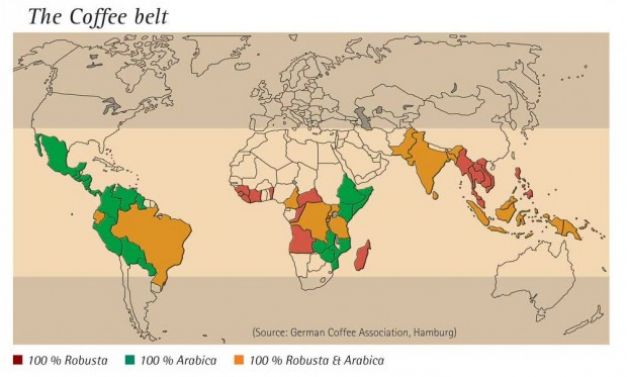

Scurt Istoric
În Europa cafeaua ajunge prin portul Venetia, nodul comercial cu negustorii arabi. Popularitatea si-o câstigã în momentul în care este oferitã ca alternativã la bãuturile reci. Multi europeni deprind acest obicei în timpul cãlãtoriilor. În secolul al XVII-lea, când olandezii dominã comertul naval, se introduce cultivarea la scarã largã în Indonezia, Java, Sumatra, Sulawesi si Bali. Odatã ce francezii aduc o plantã de cafea în Martinica, cafeaua ajunge si în America Latinã. Motivul pentru care Brazilia este astãzi cea mai mare producãtoare de cafea este o boalã care s-a rãspândit în culturile asiatice în secolul al XIX-lea, care le-a compromis. Cât despre Africa, plantatorii britanici reintroduc cultivarea sa aici, dupã primul rãzboi mondial.
În 1453 cafeaua este adusã la Constantinopol unde este deschisã prima cafenea din lume. Totodatã legea turceascã permite femeii sã divorteze dacã sotul sãu nu îi aduce zilnic ratia de cafea. Un episod interesant se consumã în 1511, când Khair Beg, un guvernator corupt din Mecca, vrea sã interzicã butura pe motiv cã poporul i se împotriveste din cauza ei. Sultanul însã, care considerã bãutura sacrã, ordonã uciderea guvernatorului. Cafeaua, declaratã bãuturã permisã crestinilor de ctre Papa Clementin al VIII-lea, este adoptatã de Europa în momentul în care se deschide prima cafenea la Venetia, în 1645, urmatã de una în Paris, în 1672. La 1700 existã chiar 2000 de cafenele în Londra. Interesant este si faptul cã în Brazilia industria cafelei debuteazã cu legãtura extraconjugala dintre colonelul brazilian Francisco de Melo Palheta si sotia guvernatorului francez din Guyana, care îi trimite amantului un buchet de flori în care ascunde niste lãstari de arbore de cafea. Bãutura care prilejuieste numeroase întâlniri si ipostaze de socializare primeste chiar o odã din partea lui Johann Sebastian Bach, în 1732.